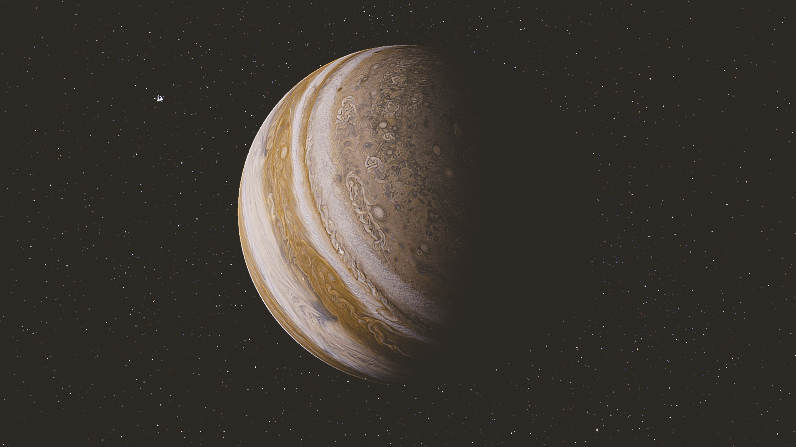

Jupiter im Überblick
Jupiter, benannt nach dem römischen König der Götter, ist der fünfte und größte Planet in unserem Sonnensystem. Seine massive Größe und seine prächtigen Bänder aus Wolken machen ihn zu einem faszinierenden Himmelskörper. Erfahren Sie mehr über seine Entstehung, seine beeindruckende Atmosphäre und die Rolle, die er in der Dynamik unseres Sonnensystems spielt.
Missionen zu Jupiter
Tauchen Sie ein in die spannenden Missionen, die von Novus Space Exploration speziell für die Erforschung von Jupiter entwickelt wurden. Von Raumsonden bis zu fortschrittlichen Teleskopen haben wir wegweisende Schritte unternommen, um die Geheimnisse dieses Gasriesen zu enthüllen und unser Verständnis des Sonnensystems zu vertiefen.
Die Atmosphäre von Jupiter
Jupiters Atmosphäre besteht hauptsächlich aus Wasserstoff und Helium, mit faszinierenden Wolkenstrukturen und turbulenten Stürmen. Erforschen Sie mit uns die einzigartige Chemie und Dynamik dieser Gasriesenatmosphäre und entdecken Sie, wie sie sich von anderen Planeten unterscheidet.
Das Magnetfeld und die Monde
Jupiter ist nicht nur für seine Größe bekannt, sondern auch für sein mächtiges Magnetfeld und seine zahlreichen Monde, einschließlich der vier großen Galileischen Monde. Erfahren Sie mehr über die komplexen Wechselwirkungen zwischen Jupiter und seinen Monden, die unser Verständnis von Planetensystemen vertiefen.
Zukunft der Erforschung des Jupiter
Bleiben Sie mit uns verbunden, um die neuesten Updates und Entdeckungen im Zusammenhang mit Jupiter von Novus Space Exploration zu verfolgen. Vielen Dank für Ihr Interesse an unserer Mission, die Grenzen des Wissens zu erweitern und die Geheimnisse des Universums zu enthüllen.